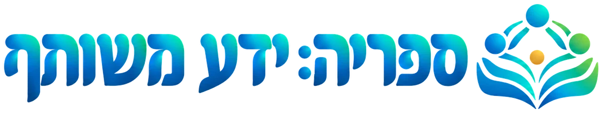
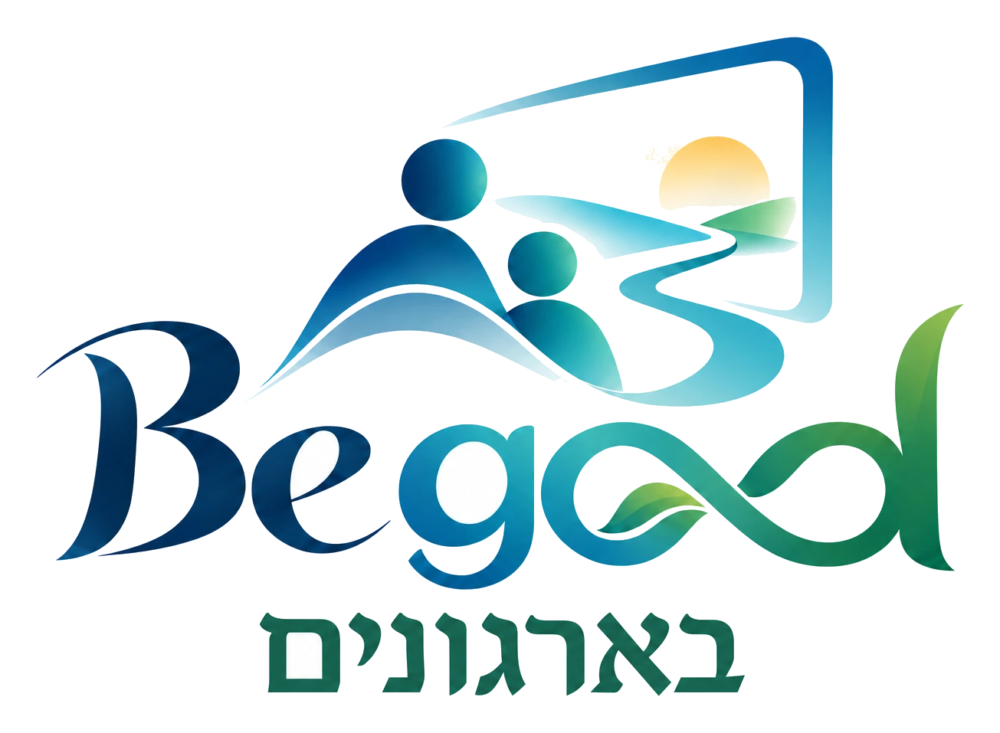

ממחקר להבנה. מהבנה לעשייה.

מחקרים, מסגרות ורעיונות שמחברים בין חוסן, למידה ועבודת צוות. ספרייה אחת, לחינוך ולארגונים.


384מקורות עם תקציר מתועד
2מבטים, מאגר משותף
7תחומי עשייה
טוען את הספרייה…
לחשוב עם הידע
מהמקור אל התרגול
שבעה כיווני תרגול מוצעים של Begood לצוותים בוגרים. הקשרים למקורות הם בסיס לחשיבה ולתכנון, ואינם מעידים שהתרגילים תוקפו.
לקרוא בשקיפות